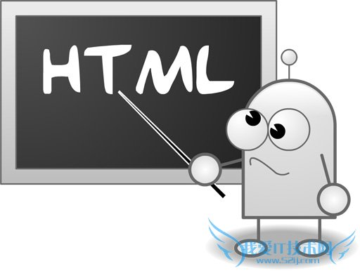

第二题
Web技术基础主要有三部分内容：HTML、CSS和JavaScript脚本语言。HTML(Hyper Text Markup Language)是超文本标记语言的缩写，是计算机软件中最简单的技术。它使用特定格式的标记来标注网页中的各类内容，以便浏览器程序解析处理。使用HTML编写的文件称为网页（Web Page），扩展名通常为.html，或者.htm。相互紧密关联的一些网页及其它资源组成网站，发布到Web服务器，互联网上的用户可方便地通过浏览器进行访问，此即网络体系架构中应用层的Web应用（或者HTTP应用）。Web应用简单易用，能够在任何地方（Anywhere）、任何时间（Anytime）、任何设备（Anydevice）上访问，是Internet上的主要应用。HTML的列表标记有哪些，请列出2－3个。
列表标记主要有：有序列表<ol>,无序列表<ul>,列表项<li>.